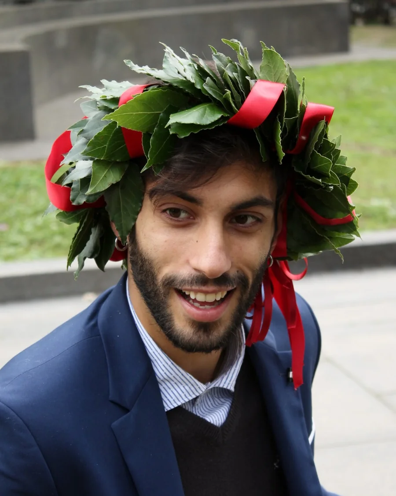
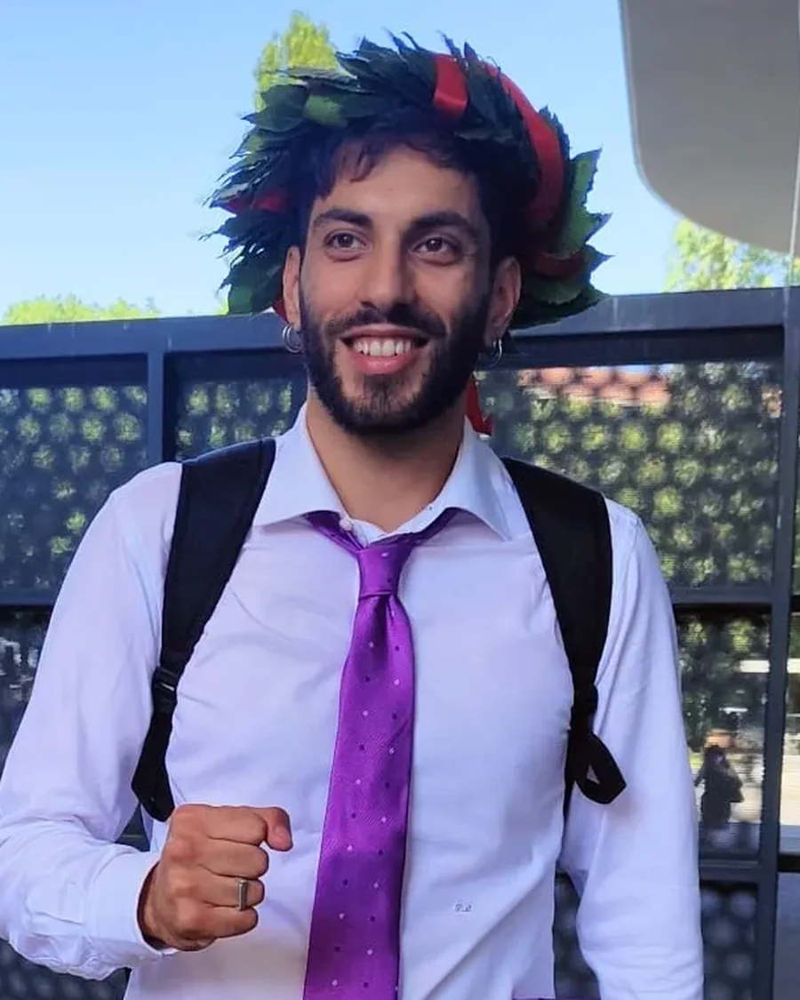
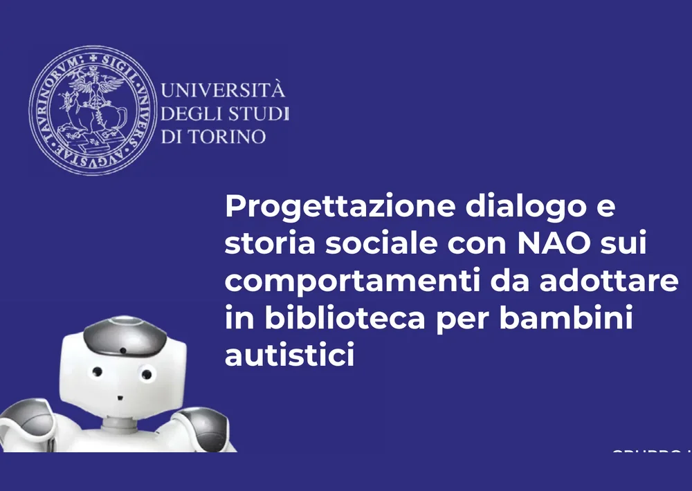
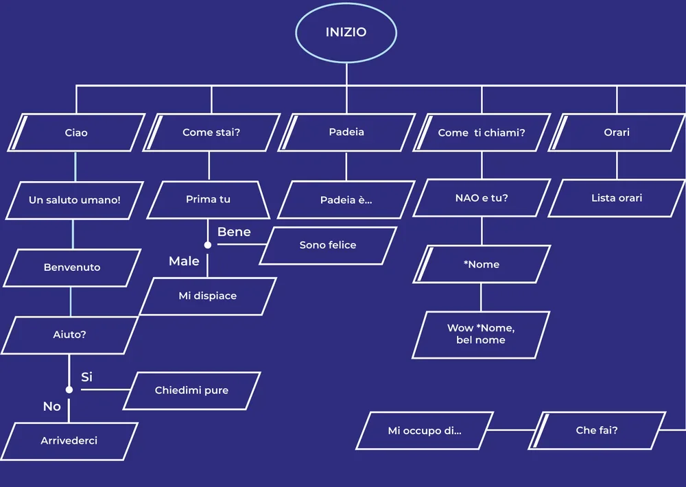
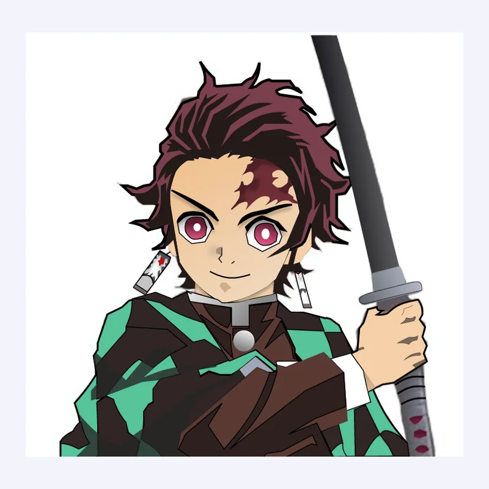
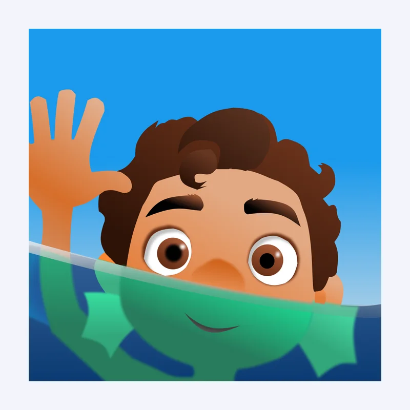
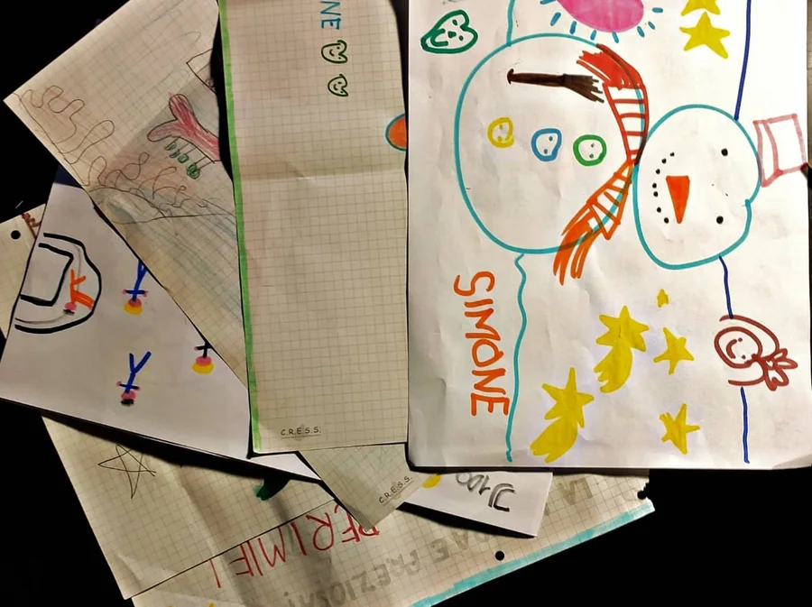
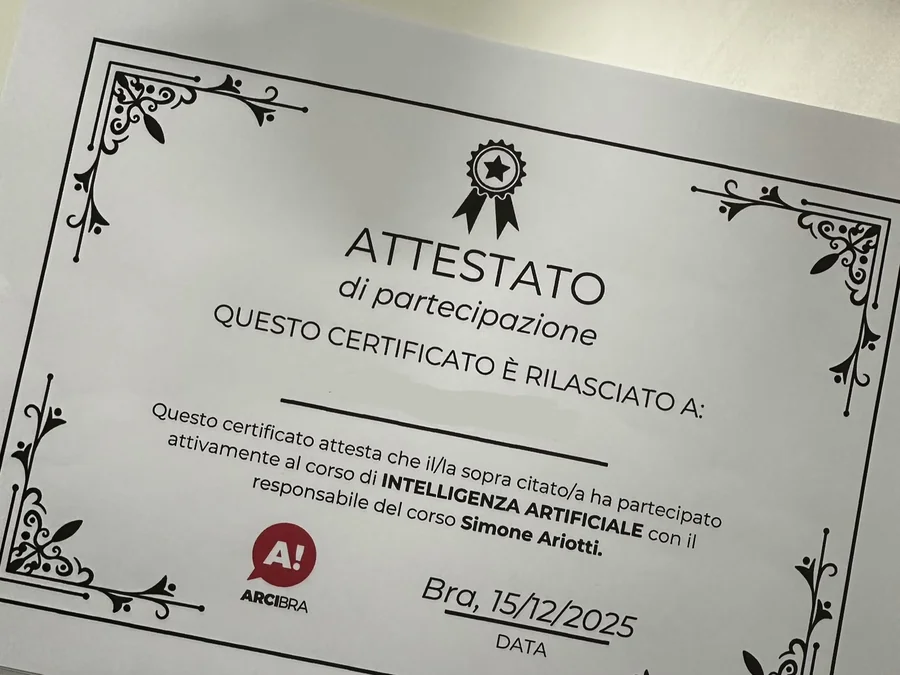
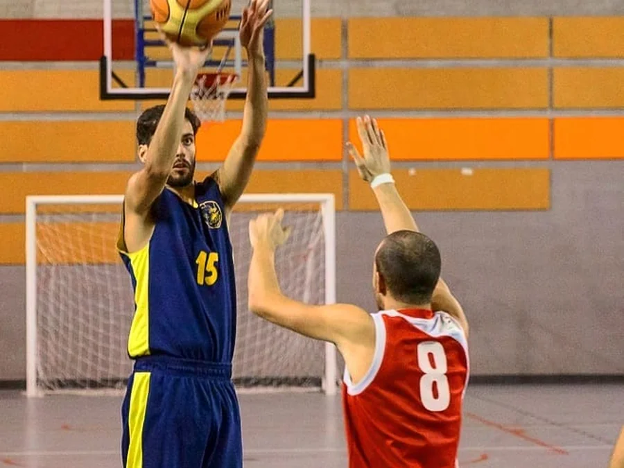
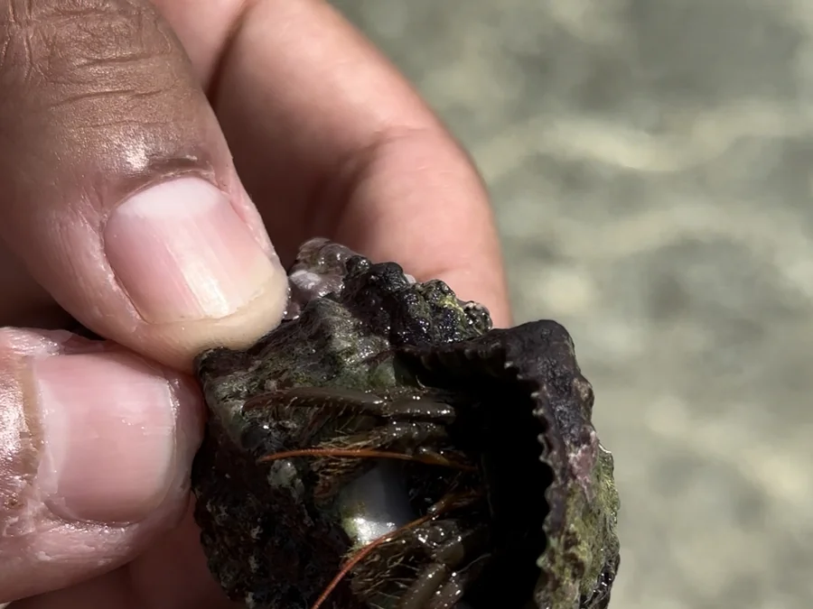

Quando studiavo sapevo a grandi linee cosa mi interessava, ma non sapevo ancora che avesse un nome.
01Gli studi
Ho scelto Scienze della Comunicazione per l'interesse verso le forme della comunicazione che non passano dalla parola diretta: immagini, simboli, layout. Modi di dire le cose senza dirle.


2019 e 2022 · Le due lauree
Tre anni tra una foto e l'altra. Nella prima non sapevo ancora che la progettazione UX esistesse. Nella seconda avevo davanti una strada. In mezzo c'è il momento in cui i pezzi sparsi hanno smesso di essere sparsi.
La magistrale ha raddrizzato il tiro. La comunicazione continuava a piacermi, ma volevo qualcosa che si potesse costruire. Ed è lì che ho incontrato un mondo che non sapevo esistesse: l'interazione uomo-macchina. Ho seguito un corso quasi per caso e ho capito subito, non "col tempo", subito, che era la mia strada.
Il progetto d'esame era il dialogo di un robot umanoide, in piena pandemia: quattro aree di conversazione, un tono di voce dichiarato, un albero con i suoi rami e le sue uscite.


Giugno 2020 · Interazione uomo macchina
NAO doveva accogliere bambini autistici in biblioteca e spiegare come comportarsi senza spaventarli: si attivava solo se il bambino provava a parlargli per primo. Il primo albero di dialogo che ho disegnato. Sugli agent, oggi, il problema è lo stesso: dove il sistema parla, dove tace, e cosa succede quando l'utente esce dal binario.
Esercitazione universitaria, non un lavoro commissionato. Corso di Interazione uomo macchina, approcci avanzati, Università degli Studi di Torino. Progetto di gruppo, quattro persone. Robot NAO di SoftBank Robotics, scenario ambientato nella Fondazione Paideia di Torino.
Figma l'ho imparato da autodidatta, ore dentro lo strumento solo perché mi divertiva. È la cosa più caratterizzante che posso dire di me: amo questo mestiere dal primo giorno, prima ancora di sapere che fosse un mestiere.


2021 · Ore dentro Figma
Figma usato come editor di grafica vettoriale, che non è il suo scopo. Nessun obiettivo, nessuna committenza: solo il gusto di stare dentro lo strumento. Rivederli adesso mi fa sorridere, e un po' mi emoziona: quelle ore sono state il vantaggio che non sapevo di stare accumulando.
Esercizi personali, non lavori commissionati. Tanjiro Kamado è un personaggio di Demon Slayer, di Koyoharu Gotouge e Shueisha. Luca è di Disney e Pixar.
02Il percorso storto
Ho fatto il maestro di scuola primaria mentre finivo la magistrale, e li ho imparato che la complessità non si semplifica alzando la voce, ma trovando l'ordine giusto in cui spiegarla. Ho lavorato in una software house tra siti web e comunicazione digitale. Ho fatto QA su prodotti enterprise, imparando a leggere i prodotti da dentro: a vedere dove si rompono prima ancora di chiedermi che aspetto dovrebbero avere.

2020–2021 · Un anno da maestro
Quello che mi hanno regalato i bambini nel corso dell'anno. Li ho tenuti tutti. In classe il riscontro sul tuo lavoro arriva subito e senza filtri: capisci in tempo reale se quello che hai detto è arrivato, e non puoi dare la colpa a chi ti ascolta.
03Il mestiere di oggi
Quando sono arrivato al design di prodotto quel percorso aveva già dato una forma al mio modo di lavorare. Prendo problemi complessi, li smonto nei loro pezzi fondamentali e li rimonto in strutture che reggono anche quando crescono. Da tre anni lo faccio su una suite B2B enterprise: un design system costruito da zero, pattern di interazione per sistemi con AI agentica, architetture conversazionali.
Questo non vuol dire che l'estetica non conti. Prima li ho voluti scalabili, poi ho imparato a farli anche belli: la bellezza non è finitura appoggiata sopra il sistema, è parte di come un sistema convince chi lo usa.
Da bambino uno dei miei giochi preferiti erano gli album attacca e stacca: scenari fissi, sticker da ricombinare, ogni volta una scena nuova con gli stessi pezzi. Ci ho ripensato anni dopo, disegnando componenti da riusare tra prodotti diversi: il filo rosso partiva ancora più indietro di quanto pensassi.
C'è un altro posto in cui questo mestiere mi serve. Da ottobre 2025 faccio il divulgatore per l'Arci, con corsi di intelligenza artificiale rivolti a chi non lavora nell'IT. È lo stesso mestiere del maestro alla primaria ed è lo stesso mestiere del design: trovare l'ordine giusto in cui spiegare una cosa complessa, e togliere tutto quello che non serve a capirla.

Da ottobre 2025 · Divulgazione
Gli attestati me li dà l'associazione, io li consegno alla fine del corso. La parte che mi piace davvero è il confronto in aula, e vedere qualcuno uscire capace di usare uno strumento che il primo giorno lo intimidiva.
04Fuori dal lavoro
Gioco a Magic: The Gathering, soprattutto nei formati sealed, quelli dove non costruisci il mazzo che vuoi, ma il migliore possibile con le carte che ti capitano. Per me è design sotto un altro nome: vincoli dati, risorse limitate, e una community intorno al tavolo. Il basket invece è stato casa per più di dieci anni, e in qualche modo lo è ancora.

Fuori dal lavoro · Basket
Numero 15. In quel gesto lì hai meno di un secondo per scegliere: tirare, passare o aspettare. È uno sport di decisioni prese con informazioni incomplete, ed è per questo che non mi è mai passato.
Da bambino sognavo di fare il biologo marino. Non l'ho fatto, ma la biologia animale, quella marina in particolare, è uno dei posti dove la mia curiosità torna sempre: mi affascinano i sistemi viventi, come le parti tengono insieme il tutto.

Fuori dal lavoro · Biologia marina
Un paguro trovato in spiaggia. La conchiglia che si porta addosso cresce a spirale logaritmica: ogni giro è più largo del precedente, ma la regola che lo genera non cambia mai. Un sistema che si espande senza riscrivere le proprie regole: è la definizione di design system che preferisco.
Viaggio per vedere il mondo da prospettive che non sono la mia: culture diverse ragionano diverso, e questo per chi progetta è ossigeno. È una passione che sto trasformando in qualcosa di più strutturato con Rotte e Racconti, un progetto editoriale di viaggio che porto avanti con mio fratello: lui percorre gli itinerari e li documenta, io costruisco il sistema editoriale che li racconta.
L'intelligenza artificiale mi ha cambiato il modo di essere curioso: riesco a coltivare più discipline in parallelo di quanto fosse possibile prima. Approfondire, collegare, tornare.
Articolato per scelta, non per indecisione.
Se sei arrivato fin qui, forse abbiamo qualcosa di cui parlare.
Scrivimi